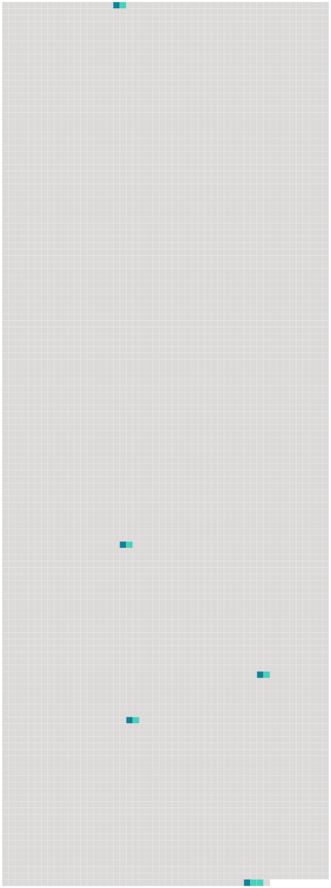

Longueur nb maillons : 5 mentions |
|
Je ne pus supporter ce spectacle ; je fermai la fenêtre, et je me jetai sur [mon lit] avec une haine et une jalousie effroyables dans le cœur, mordant mes doigts et ma couverture comme un tigre à jeun depuis trois jours. [139 phrases] Quand je revins à moi, j’ étais couché sur [mon lit] , dans ma petite chambre du presbytère, et le vieux chien de l’ ancien curé léchait ma main allongée hors de la couverture. [35 phrases] J’ avais à peine bu les premières gorgées du sommeil, que j’ entendis ouvrir les rideaux de [mon lit] et glisser les anneaux sur les tringles avec un bruit éclatant ; je me soulevai brusquement sur le coude, et je vis une ombre de femme qui se tenait debout devant moi. [6 phrases]
Elle posa la lampe sur la table et s’ assit sur le pied de [mon lit] , puis elle me dit en se penchant vers moi avec cette voix argentine et veloutée à la fois que je n’ ai connue qu’ à elle : [59 phrases]
» Je sautai à [bas du lit] |
 |
Il est possible de télécharger la ressource sur la page Ortolang |
Si vous avez des questions ou vous voyez des erreurs, merci d'envoyer un mail à silvia.federzoni89@gmail.com |